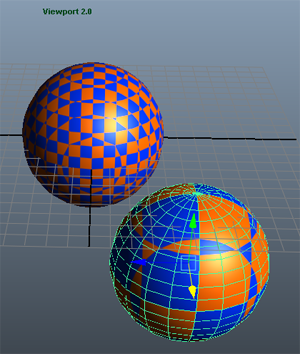

CgFX 着色器在 Viewport 2.0 中与硬件渲染器中显示不同
默认渲染器、硬件渲染器和 Viewport 2.0 渲染器在 CgFX 状态指定行为方面存在差异。DepthMask 状态的默认值不同。该默认值是 CGFX 着色器未指定值时使用的值。对于不同的渲染器，默认值如下所示：
- 默认渲染器：未指定时，采用 DepthMask = true。
- 硬件渲染器：未指定时，采用 DepthMask = false。
- Viewport 2.0 渲染器：未指定时，采用 DepthMask = true。
因此，如果使用硬件渲染器、但为默认渲染器和 Viewport 2.0 渲染器给定错误结果，则 CgFX 着色器可能也会正常工作。在这种情况下，将 DepthMask = false 状态指定添加到某些着色器过程可能会解决该问题。
依赖于局部顶点位置的 CgFX 插件未按预期方式运行
使用 Viewport 2.0 时，如果启用 Viewport 2.0 选项中的“合并世界”(Consolidate world)选项，则依赖于局部顶点位置的 CgFx 插件可能不会按预期方式运行。
在以下示例中，check3d.cgfx 着色器将 3D 棋盘格图案应用于与该对象局部空间中的曲面位置相对的对象，因此可能会在 Viewport 2.0 中生成意外的结果。同一着色器将应用于两个球体，但在“合并世界”(Consolidate world)已启用时，如果翻滚场景或选择球体，则棋盘格图案将会移动。

可以通过选择“渲染器 > Viewport 2.0”(Renderer > Viewport 2.0)>  打开“硬件渲染器 2.0 设置”(Hardware Renderer 2.0 Settings)窗口来启用或禁用“合并世界”(Consolidate world)；或者，打开“渲染设置”(Render Settings)窗口并单击“Maya 硬件 2.0”(Maya Hardware 2.0)选项卡也可以完成此操作。详细信息请参见 Viewport 2.0 选项。
打开“硬件渲染器 2.0 设置”(Hardware Renderer 2.0 Settings)窗口来启用或禁用“合并世界”(Consolidate world)；或者，打开“渲染设置”(Render Settings)窗口并单击“Maya 硬件 2.0”(Maya Hardware 2.0)选项卡也可以完成此操作。详细信息请参见 Viewport 2.0 选项。